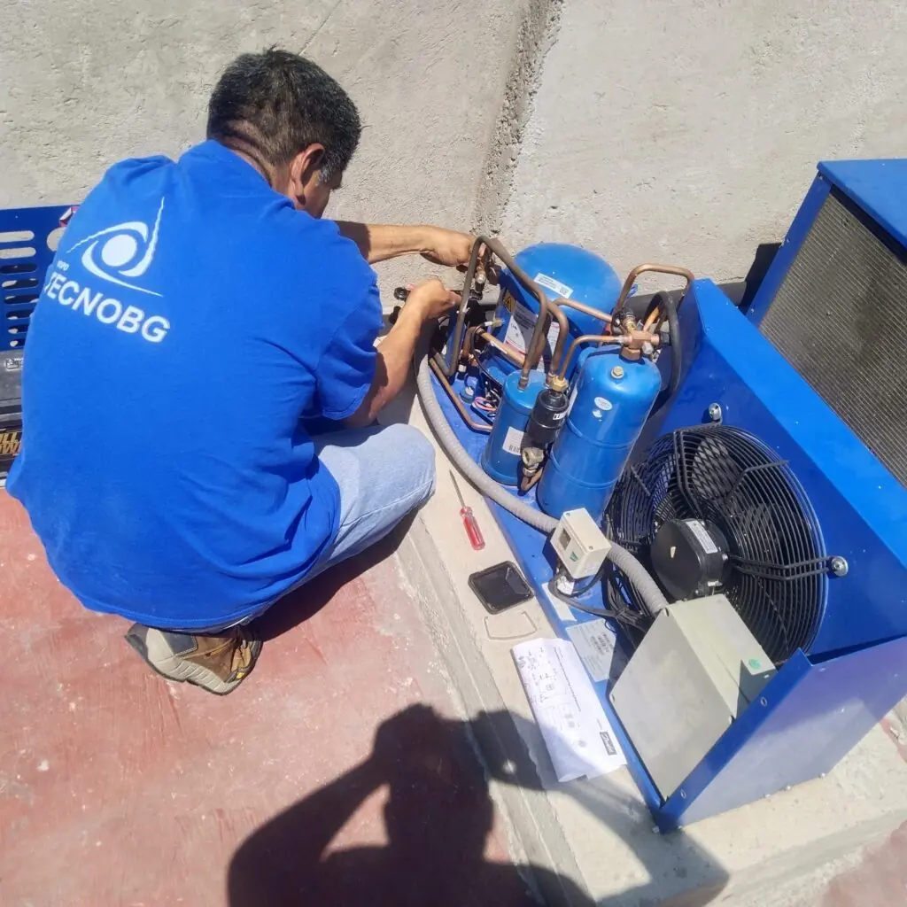
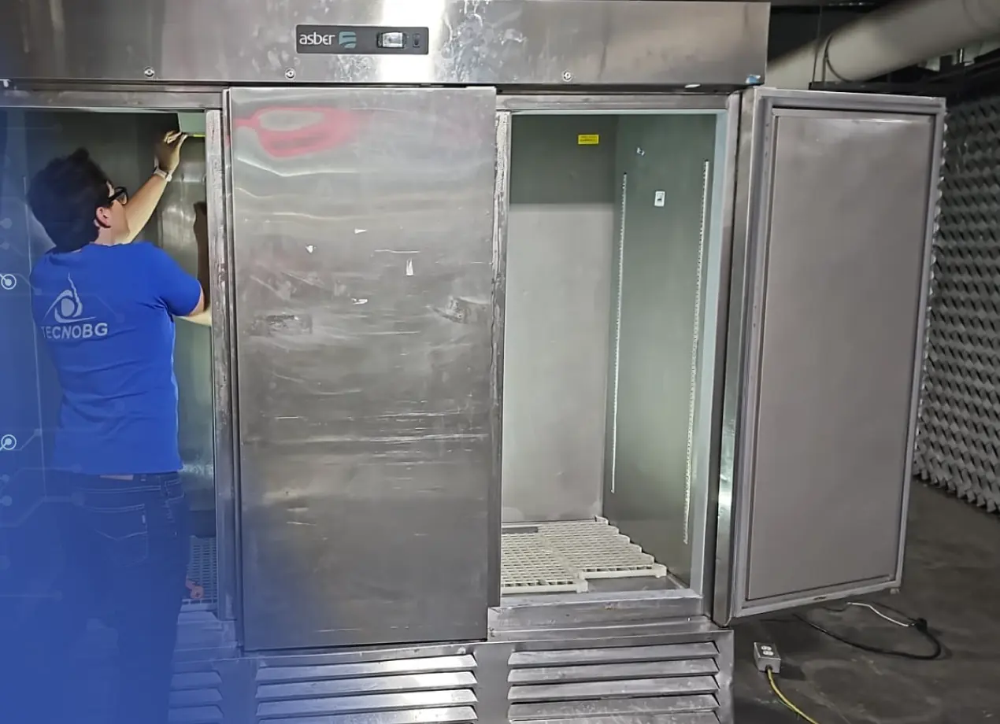
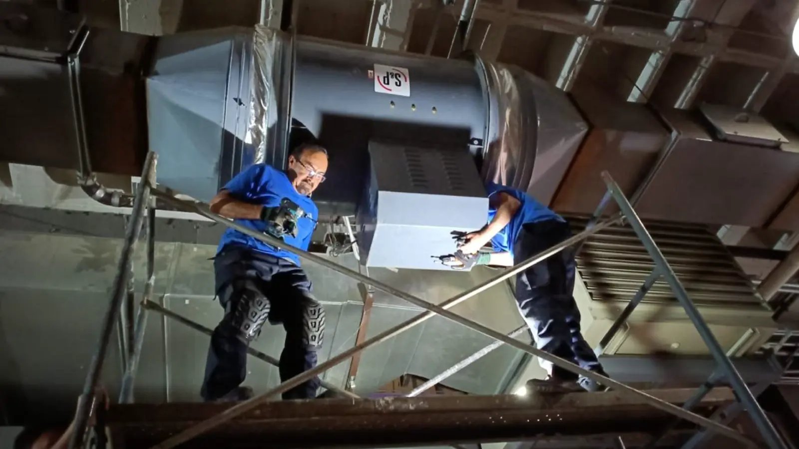

Propuestas de rediseño para tecnobg.com
Tres prototipos navegables con el contenido actual del sitio y fotos propias. Están pensados primero para celular: ábrelos y desliza para ver las transiciones.
Mejor en celularBotón “Pendientes” para mostrar u ocultar datos por confirmarIncluye páginas internas: Nosotros, Pólizas, Bolsa de trabajo y legales

Propuesta 02Moderado
Operación primero
La portada pregunta qué necesita el cliente y lo lleva directo a emergencia, reparación, mantenimiento o pólizas. Claro, rápido y orientado a contacto.
Revelado de imagenSelector animadoContadoresLínea de proceso con scrollCarrusel de trabajo, una foto a la vezBarra fija de contacto
Abrir prototipo →

Propuesta 03Moderno
Ficha técnica
Formato de expediente corporativo: capítulos numerados, ficha de datos clave y tipografía con serifa. Transmite rigor, formalidad y experiencia.
Títulos que emergen por líneasRevelado lateral de fotoCarrusel horizontal fijadoLínea de proceso con scrollFrase que se iluminaBotón de WhatsApp fijo
Abrir prototipo →

Propuesta 05Arriesgado
Cinemático
Narrativa por capítulos: escenas a pantalla completa que se reemplazan con el scroll, con tipografía grande y sobria en azul profundo.
Pantalla de cargaTexto con imagen dentroEscenas fijadasTransiciones entre capítulosProceso horizontalBotones flotantes de contacto
Abrir prototipo →